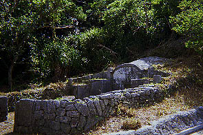
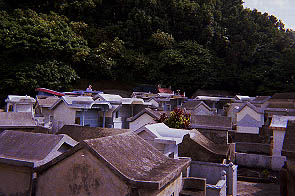
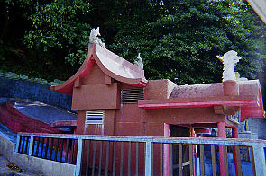
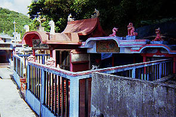
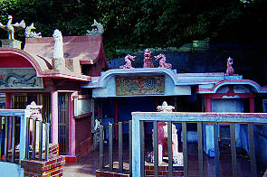
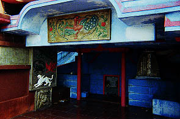

本土の人間から見ると相当強烈な印象を受けるのだが、沖縄の人にはさして珍しい物ではないので、今までこのサイト上で取りあげる事を控えていたのだが、この度そんな亀甲墓の中でも凄いものを見つけたので敢えて取りあげてみました。 まずは亀甲墓とは何じゃい、という方のための沖縄墓概論を超簡単に説明させていただく。 現在あちこちで見られる沖縄の墓の形態を超簡単に分類すると亀甲墓と破風型、家型の三つに分かれる。 このうち家型は現在もっともポピュラーな形で読んで字のごとく家の形のコンクリートで出来た墓で、火葬の普及と共に戦後急速に広がっていった形式である。主に平地の墓地に多く見られる。 亀甲墓は斜面に作られる形式の墓地で、後ろの方は斜面に埋まっているような状態になっている。破風型も同じ様な形態でこちらは屋根が付いている。初めて見た時はどんな偉い人が埋葬されているのか、と思う程大きく凄い形だったが結構あちこちで見かけるので特別な墓ではないようだ。かつては珊瑚石等でつくられていたが現在はコンクリート製が多く、また古い亀甲墓もコンクリートや漆喰で塗り固められているものも多い。また、良くいわれる事だが亀甲墓自体が女性の腹部を模した形になっており、これは死者の胎内回帰を表しているそうだ。また亀甲墓のある地域は沖縄本島中南部に多いといわれ、台湾や香港でも同じような形態の墓を見かけた事があるので華南地域からの影響かと思われる。 下は極めてオーソドックスな亀甲墓。さすがに那覇の繁華街辺りにはないようだがコザ辺りでは飲み屋や商店などが並ぶ繁華街の中にいきなり巨大な亀甲墓が突然現れたりして度胆を抜かれたりする。  ロケ地；座間味村
沖縄ではもともと風葬が主流で亀甲型の墓室内に遺体を安置し、数年後に洗骨をして壺に納め、墓室内奥の棚に納めていたという。ちなみに墓室内部は4〜8畳位の広さである。大きいものはもっと大きいものもあるけど。そんな風葬の名残りからか亀甲墓は巨大なものが多い。 また、春には清明祭と呼ばれる行事があり、それぞれの墓地の前庭で墓参り＆宴会がくりひろげられるというファンキーな伝統があるので前庭も広くとられている。かくして沖縄の墓地は本土の常識からは考えられない程広く「墓普請は人生の三大事業の内のひとつ」とまでいわれる程、多大な費用と労力を必要とするものになったのである。 ちなみに琉球王朝時代には庶民が亀甲墓をつくることは許されていなかったという。従って現在数多く見られる亀甲墓は明治以降につくられたものがほとんどだそうです。というわけで、超簡単な沖縄のお墓豆知識でした。
・・・で、名護である。沖縄本島を南北に貫く国道58号線をドライブしているとこんな風景が見えて来た。  沖縄本島では良く見られる典型的な家型の集合墓地である。このように家型の墓地が密集している墓地は何だか亡くなった人のためのミニチュアの街みたいで本土の人間である私にとってはビジュアル的に興味深い風景なので運転しながら眺めていた。すると一番奥の方に何やら派手な色使いの建造物が見えるではないか。 クルマを停めて死者の集落へ一寸お邪魔する。通路は複雑で所々行き止まりになっていたりして迷路のようだ。 これは墓地の向きを風水師などに診てもらいそれぞれの家にとって適当な向きや場所を選定するからかと思われる。ちなみに墓地の建設時期はユタ（巫女）が決めるそうである。このようなマジカルパワーが沖縄では強い影響力を持ち、特に墓地の建設、家の普請その他様々な行事の日取りを決定する場合には現代でも欠かせないそうである。 墓地の中を歩いていき、やっと奥の方まで辿り着くと、そこにあったのは青と赤のツートンカラーを基調とした物凄く派手な墓地だった。  一般的に亀甲墓でペイントされたものは無くもないが、あってもせいぜい単色でしかも淡いパステルカラー系の色を使う程度で、こんなに派手な墓は沖縄では見た事がないぞ（台湾では見たけど）。 亀甲部分の塗分け方などUFO呼んでるのかと思っちゃいました。  通常亀甲墓には拝殿はないが、ここには拝殿がある。家型と亀甲墓を足して足しっぱなし、しかも濃ゆ〜いテイストのあんかけソースを足したような状態だ。屋根の上には龍、鳳凰、鯱、入口にはもちろんシーサー（獅子）。   中央の破風の下には鳳凰のレリーフ。その左下には玄武、白虎、朱雀、青竜の四神のレリーフとさらにその下には判別不能の生き物の顔のレリーフが飾られている。 赤い方の建物はお堂のような造りでこちらの破風には龍のレリーフ。さしずめ珍獣動物園といった雰囲気。 そして何といっても青と赤のコントラストが強烈すぎる。 恐らく地元でも相当の有力者か金持ちか変わり者だと思う。 私も普通の観光客よりは沖縄の墓はよく見ているつもりだがこんなに中に入るのが楽しみでウキウキするような墓地は初めてお目にかかった。何だかあの世に行くのが楽しそうじゃないか。 私も是非こんな墓に入りたいものである。中はもっとゴージャスだったりして。 ただ、もしかしたら地方によってはこれ位の墓地はあったりまえ〜だったりする可能性もあったりする、というか充分ありそうな気がするので取りあえず現時点での沖縄珍墓地暫定チャンプという事にさせて頂く。 というわけでココよりもファンキーな沖縄の墓地を御存じの方、是非メール、ミ−。
2002.8.
珍寺大道場 HOME